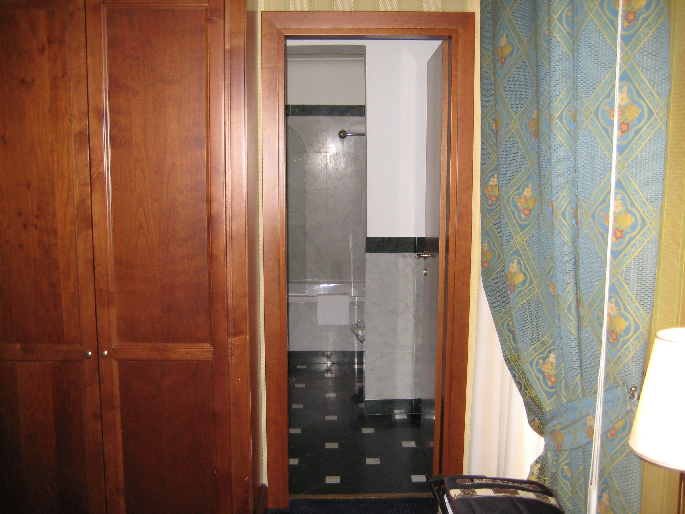

ROOMA
Ikuinen kaupunki
Rooman hotellit
Rooman hotellivalikoima on todella laaja. Kun valitset hotelllia, kiinnitä ensin huomiota sijaintiin. Varmista että olet lähellä niitä paikkoja, joita olet mennyt katsomaan. Seuraavaksi kannattaakin miettiä paljonko on valmis hotellista maksamaan.

Hotelli Intercontinantal Palace on hotelli jota voi suositella. Se sijaitsee lyhyen (n. 5-10min) matkan päässä rautatieasemalta, joten voit helposti kävellä asemalta suoraan hotelliin. Rooman merkittävimmät nähtävyydet ovat aivan tämän hotellin lähellä. Intercontinental Palacen tarjouksia kannattaa seurata tarkkaan. Hotelli on laadukas, siinä on hyvä palvelu ja siistit tilat.
Varaa huone: International Palace Rooma
© copyright Roomaan.fi | kaikki oikeudet pidätetään